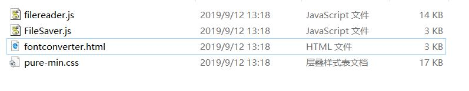

本文使用jspdf 1.5.3版。GitHub地址：https://github.com/MrRio/jsPDF
jspdf是歪果仁开发的，因此在一开始就没想过支持非英文以外的文字，这就导致了非英文的文本都是乱码。
因此就有其他大佬给增加了其他解决方案，到了1.5版本也正式加入了非英文支持的解决方案。
解决的思路大致是，给jspdf加载其他字体库，使其能够正常输出中文。
在开始的第一步我们需要从GitHub下载源代码，因为我们需要使用其中附带的工具fontconverter。
下载好后我们进入fontconverter文件夹可以看到以下目录。

直接使用浏览器打开fontconverter.html文件，可以看到如下界面
点击选择"*.ttf"字体文件，然后点击生成，会得到一个js文件。这个文件就是把字体文件通过base64编码转换成字符串存储到js文件中。该文件在后续步骤中使用。
生成的js文件结构大概如下：
重点注意
fontName 字段必须设置为小写(存在bug的原因)思源字体下载：https://pan.baidu.com/s/14YAE8X_zZ0wMY19npGrwrg
注意：此下载仅为博主随意找的一个网盘打包连接，建议大家到官网地址下载。
在全面应用之前需要做一些测试，避免不必要的弯路。测试代码如下
<script src="https://html2canvas.hertzen.com/dist/html2canvas.js"></script>
<script src='../../dist/jspdf.debug.js'></script>
<script src="../../dist/sourcehansanscn-normal-normal.js"></script>
<script>
var doc = new jsPDF({ orientation: 'p', format: 'a4' });
doc.setFont('sourcehansanscn-normal', 'normal');
doc.setFontSize(20);
doc.html('<div style="font-faimly:sourcehansanscn-normal;">Chinese: 中文</div>', {
callback: function (newDoc) {
newDoc.save('chinese-html.pdf')
}
});
doc.text("中文欢迎您", 1, 30);
doc.save('chinese-pdf.pdf')
</script>因为html转pdf依赖html2canvas.js因此需要先加载此文件，github地址：https://github.com/niklasvh/html2canvas
此处代码导出了2个pdf文件，设置了中文字体后，一个是直接使用jspdf的API直接绘制pdf，另外一个则是使用html输出pdf文件。
重点注意：导出HTML需要在导出的HTML中对中文文本直接指定font-faimly，否者HTML导出的pdf仍会中文乱码
如果以上测试代码通过了，就可以编写正式的导出代码。
html方法定义：
html(HTMLelement|string,callback)
参数：
范例代码如下：
<script src="https://html2canvas.hertzen.com/dist/html2canvas.js"></script>
<script src='../../dist/jspdf.debug.js'></script>
<script src="../../dist/sourcehansanscn-normal-normal.js"></script>
<script>
var doc = new jsPDF({ orientation: 'p', format: 'a4' });
doc.setFont('sourcehansanscn-normal', 'normal');
doc.setFontSize(20);
doc.html(document.body, {
callback: function (newDoc) {
newDoc.save('chinese-html.pdf')
}
});
</script>html到导出pdf的页面设计注意事项：
font-faimly为中文字体font-faimly是否是已加载的中文字体